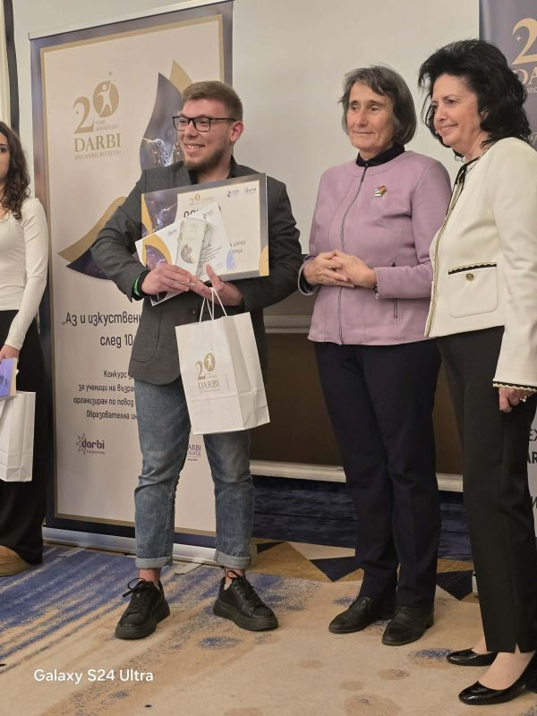
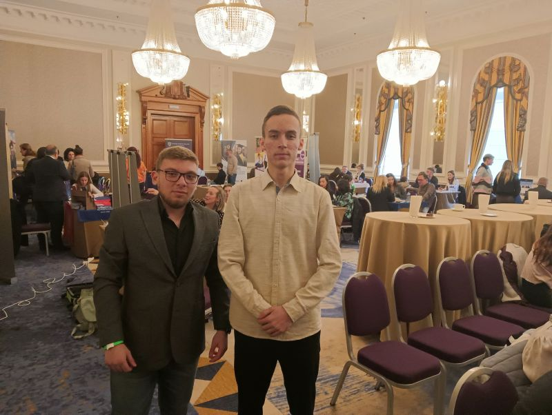
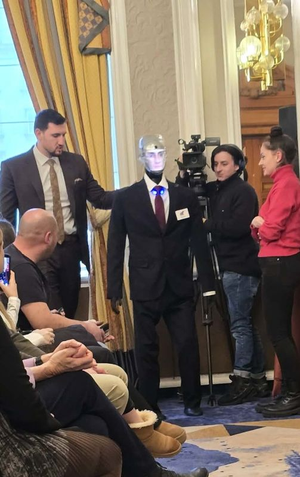

Даниел Константинов и Венцислав Колев от СУ „Йордан Йовков“ – Сливен завоюваха второ място в националния конкурс „Аз и изкуственият интелект след 10 години", организиран по повод 20-годишнината на образователна институция „ДАРБИ" – „DARBI COLLEGE INTERNATIONAL SCHOOL".
Сред над 150 участници от страната те се откроиха със задълбочено мислене, аргументирана позиция и зряло осмисляне на ролята на изкуствения интелект в съвременното общество.
Постижението е резултат от устойчива образователна среда, която развива критическо мислене, технологична култура и отговорност към бъдещето.
В тази посока училището разширява професионалната си подготовка със специалност „Интелигентни системи" – естествено продължение на обучението по програмиране и стратегическа стъпка към професиите на дигиталната ера.
Успехът на нашите ученици е доказателство, че когато знанието се съчетае с визия и целеустременост, бъдещето започва още днес.


